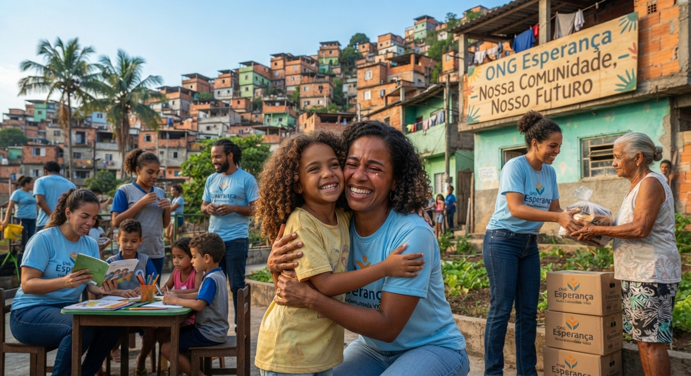

Reforço e leitura
Aulas de apoio, contação de histórias e oficinas de desenho para crianças em idade escolar.
Quero participarQuatro frentes de trabalho, tocadas por voluntários e moradores, que fortalecem a comunidade todos os dias.

Aulas de apoio, contação de histórias e oficinas de desenho para crianças em idade escolar.
Quero participarMoradores cultivam verduras e legumes juntos, e parte da colheita é distribuída às famílias vizinhas.
Quero participar.jpg)
Montagem e entrega mensal de cestas com alimentos essenciais para famílias em situação de vulnerabilidade.
Apoiar este projetoVoluntários recebem, pesam, conferem a validade e organizam cada doação para que nada se perca.
Quero participar